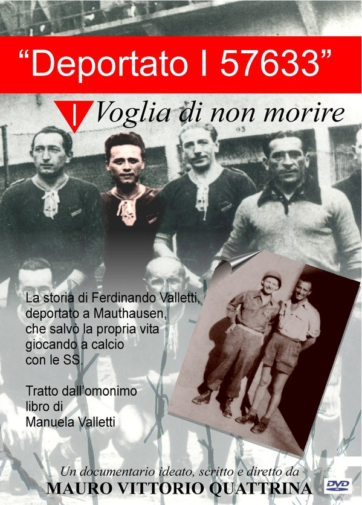

deportazione
altre pagine
pagina iniziale
Foibe
dopoguerra
gennaio
SI AVVISA CHE LA LIBERA PROIEZIONE SOLO PER LE SCUOLE DEL DOCUMENTARIO COME RIPORTATO NEL RETRO DELLA COPERTINA NON E' PIU' VALIDO DAL 01.01.2012 Riservati tutti i diritti del produttore multimediale e del proprietario dell'opera riprodotta, salvo specifiche autorizzazioni. Sono vietati la duplicazione, il noleggio-locazione, il prestito e l'utilizzazione di questo supporto per la pubblica esecuzione.
